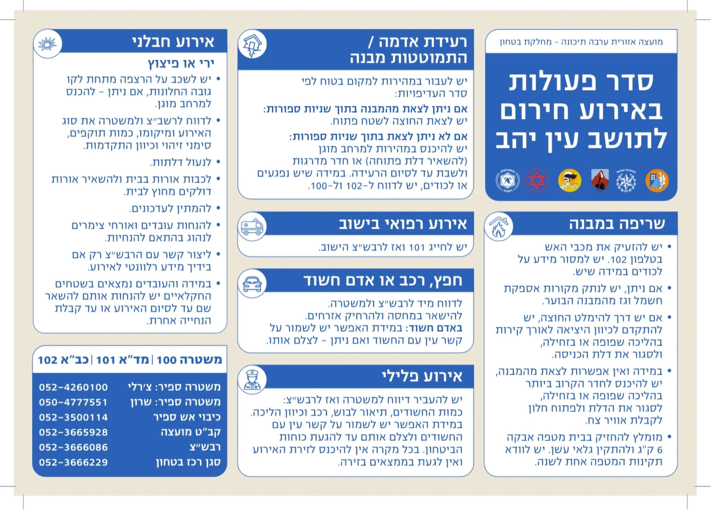
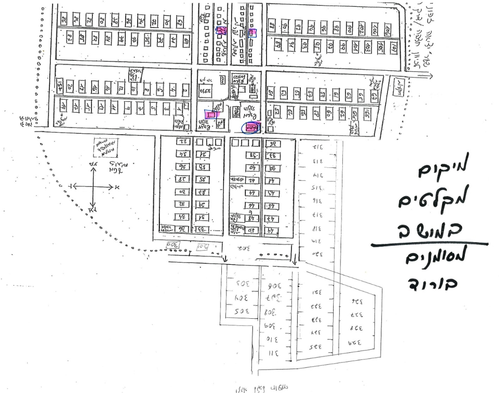

עדכונים, הודעות וכל מה שקורה בקהילת עין יהב — כל המידע במקום אחד.
עדכונים והודעות מחיי הקהילה — מתוך פורטל הקהילה של עין יהב.
נוהל סדר הפעולות ביישוב באירוע חירום — מומלץ לשמור ולהכיר:

בבקשה העבירו לאורחים ולדיירים שלכם.
לכל הטלפונים בחירום

כל האירועים של הקהילה — בלוח שנה אחד, מתעדכן שוטף בפורטל הקהילה.
ללוח האירועים